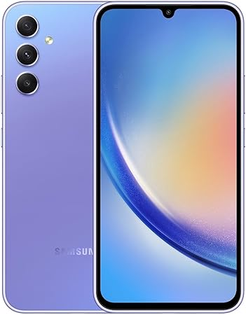
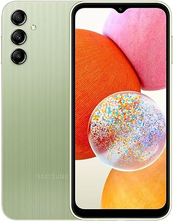
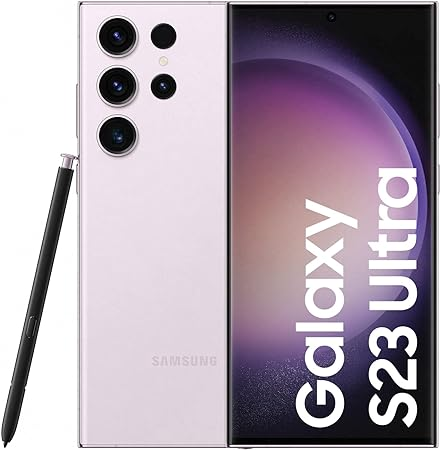
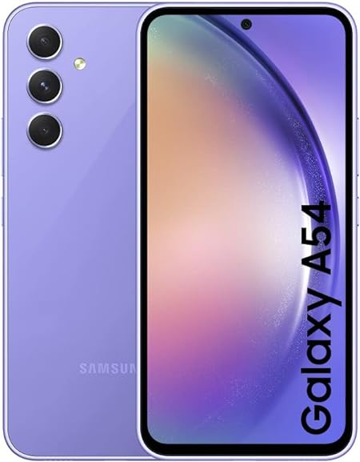
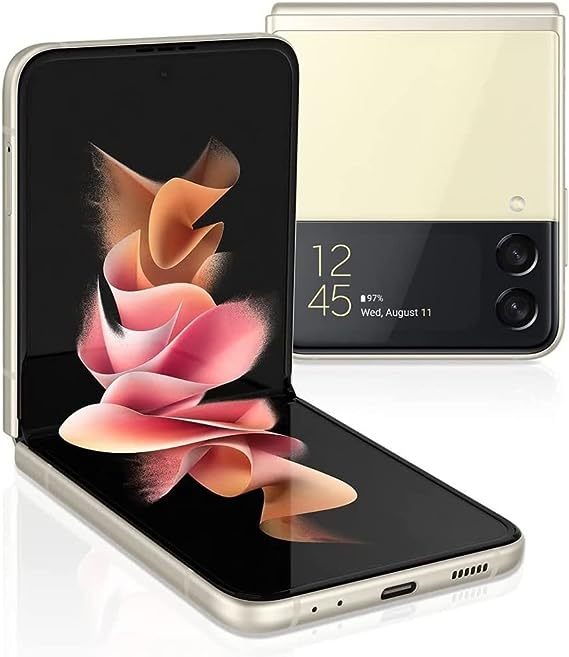

Nuestros productos
SAMSUNG Galaxy A34 5G
$5,519 Procesador Octa-Core (hasta 2.4 GHz), Memoria RAM de 4GB, Almacenamiento de 128GB, Pantalla LED Multi Touch de 6.6", HD+, Bluetooth 5, Wi-Fi 5, Cámara principal de 50MP, Android 13.
SAMSUNG Smartphone Galaxy A14
$2,799 procesador de ocho núcleos a hasta 2 GHz sin indicar cuál exactamente, aunque filtraciones previas ponían a bordo el MediaTek Helio G80 de hace un par de años. Con 4 GB de RAM y 128 GB de almacenamiento que se pueden complementar con una tarjeta MicroSD de hasta 1 TB.
Samsung Galaxy S23 Ultra
$21,566 El Galaxy S23 Ultra es resistente gracias al cristal Corning® Gorilla® Glass Victus® 2 en la parte Delantera y Trasera, todo ello finalizado con un marco de Armor Aluminium más duradero jamás utilizado en un smartphone Samsung Galaxy.
SAMSUNG Galaxy A54
$6,972 Es un gama alta de precio y de corazón, esto se nota nada más sostener el Samsung Galaxy A54 por primera vez: muy sólido, con una excelente construcción, el cuerpo de plástico se aprecia de calidad (en el tacto queda claro que no es un S23), está en el límite de lo que podría considerar un móvil grande y el hecho de venir protegido contra polvo y agua añade una resistencia que aporta notable valor.
Samsung Galaxy Z Flip 3 5G
$8,497 Teléfono celular Android desbloqueado de fábrica, versión estadounidense, modo flexible, cámara intuitiva compacta, almacenamiento de 128 GB, color crema (reacondicionado)
